日本の始まり
読もう！
旧石器時代と縄文時代
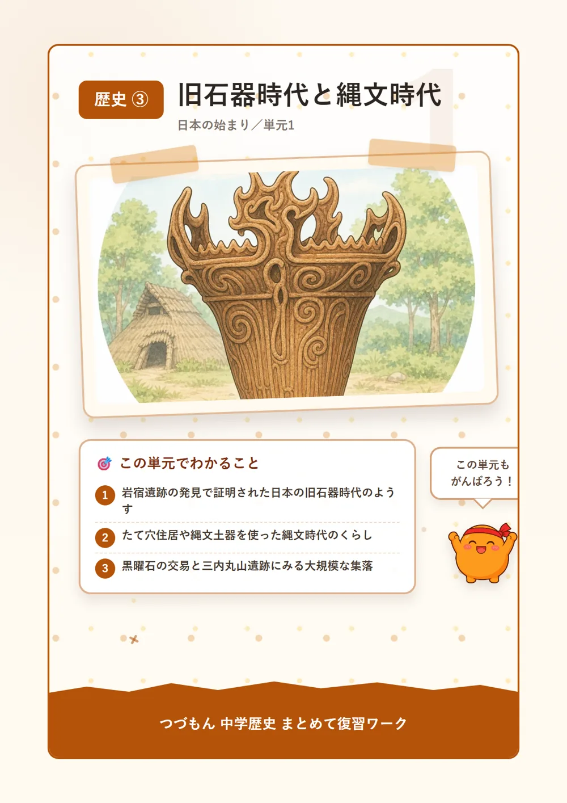
1旧石器時代の始まり
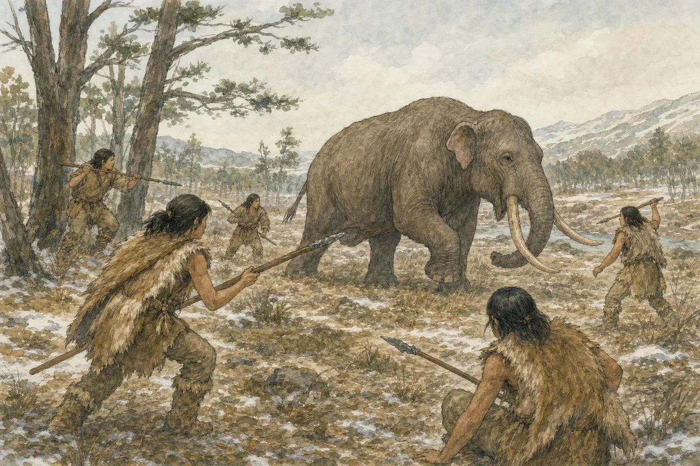
今から数万年前、日本列島は氷期(氷河時代)で海面が低くて、大陸と陸続きだったんだ。このころ、大型動物のナウマンゾウやオオツノジカが大陸から渡ってきて、人々の狩りの対象になっていたんだよ。人々は石を打ち欠いて作った打製石器を使って、獲物を追いながら移動する暮らしをしていたんだ。この時代を旧石器時代と呼ぶんだけど、群馬県の岩宿遺跡で相沢忠洋が打製石器を発見するまでは、日本に旧石器時代があったなんて誰も知らなかったんだよ。この発見のおかげで、日本にも旧石器時代が存在したことが初めて証明されたんだね。
2縄文時代の始まりと暮らし
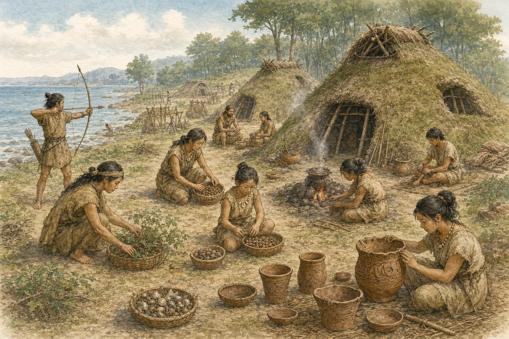
約1万年前、気候が温暖になって海面が上がると、日本列島は大陸から切り離されて今の姿になり、縄文時代が始まったんだ。人々は地面を掘り下げて柱を立てたたて穴住居に定住して、狩猟・採集や漁を中心に暮らしていたんだよ。表面に縄目の文様がある縄文土器で食料を煮炊きしていて、食べ終えた貝殻や骨を捨てた貝塚からは、当時の食生活の様子がわかるんだ。それに、女性をかたどったものが多い土偶も作られていて、安産や豊作を祈るまじないの道具として使われたと考えられているんだよ。
3交易と大規模集落
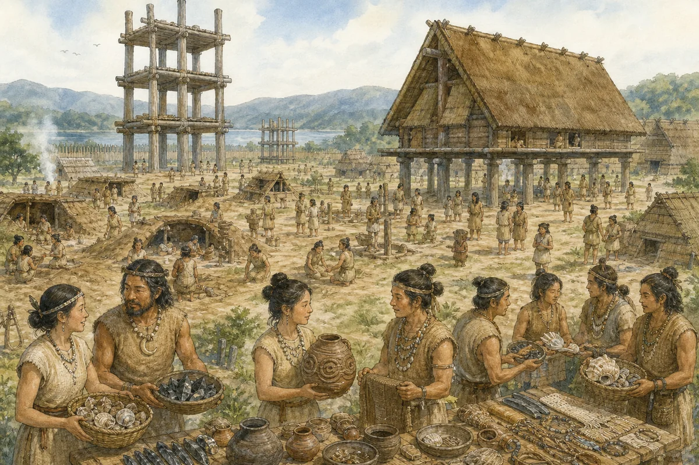
縄文時代の人々は、鋭い刃を作れる黒いガラス質の石である黒曜石などを使って道具を作っていたんだ。黒曜石は長野県の和田峠など限られた場所でしか採れないのに、遠く離れた遺跡からも見つかっていて、当時すでに広い範囲で物を交換する交易が行われていたことがわかるんだよ。青森県の三内丸山遺跡では、大型の建物の跡やクリの栽培の跡が発見されていて、縄文時代にも人々が計画的に定住して、大規模な集落を営んでいたことが明らかになっているんだね。

弥生時代
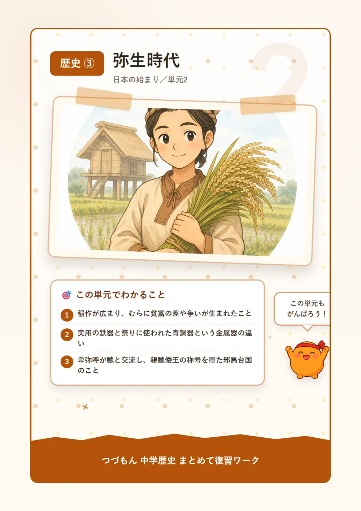
1稲作の伝来とむらの変化
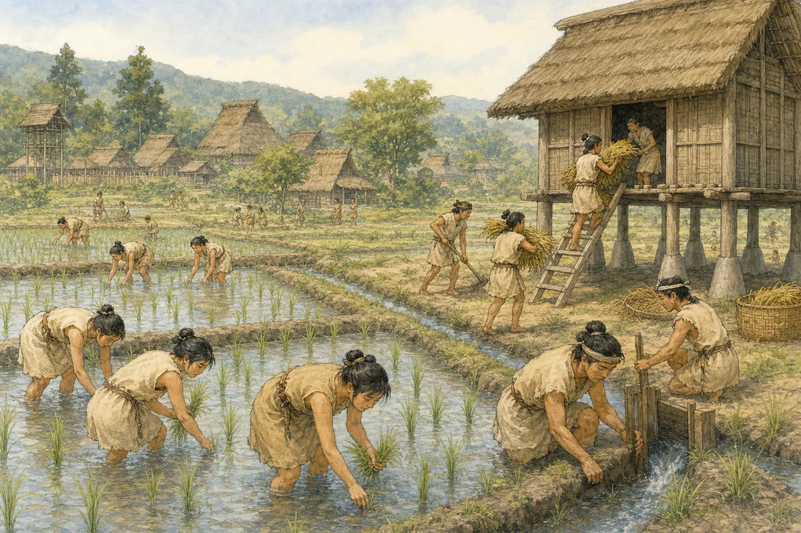
紀元前4世紀ごろ、大陸から九州北部に稲作が伝わって、東北地方まで広がり、弥生時代が始まったんだ。人々は稲の穂を摘み取るための石包丁を使い、収穫した稲を湿気やねずみから守るために高床倉庫を建てていたんだよ。稲作によって食料を蓄えられるようになると、人々の間に貧富や身分の差が生まれていったんだ。また、むらの周りには堀や柵をめぐらせた環濠(環濠集落)が造られるようになって、佐賀県の吉野ヶ里遺跡に見られるように、むらどうしの争いが起きていたこともわかるんだよ。
2金属器の伝来
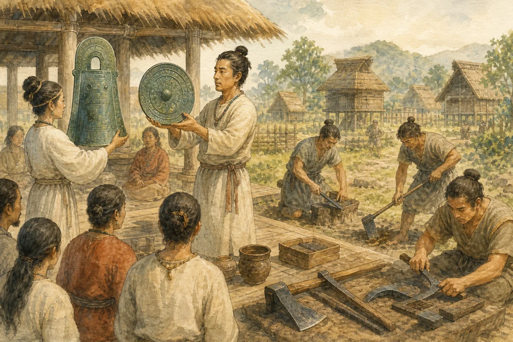
稲作とともに、大陸からは金属器も伝わったんだよ。武器や工具、農具として実用的に使われた鉄器と、銅とすずを混ぜて作られ主に祭りの道具として使われた青銅器の2種類があって、青銅器には銅鐸・銅剣・銅鏡などがあるんだ。銅鐸はつりがね形をした青銅器で近畿地方を中心に多く出土していて、表面に絵が描かれることもあるんだよ。これらの金属器は、当時の人々の暮らしを支える実用品としてだけでなく、権威や祭りの道具としても使われていたんだね。
3中国との交流と邪馬台国
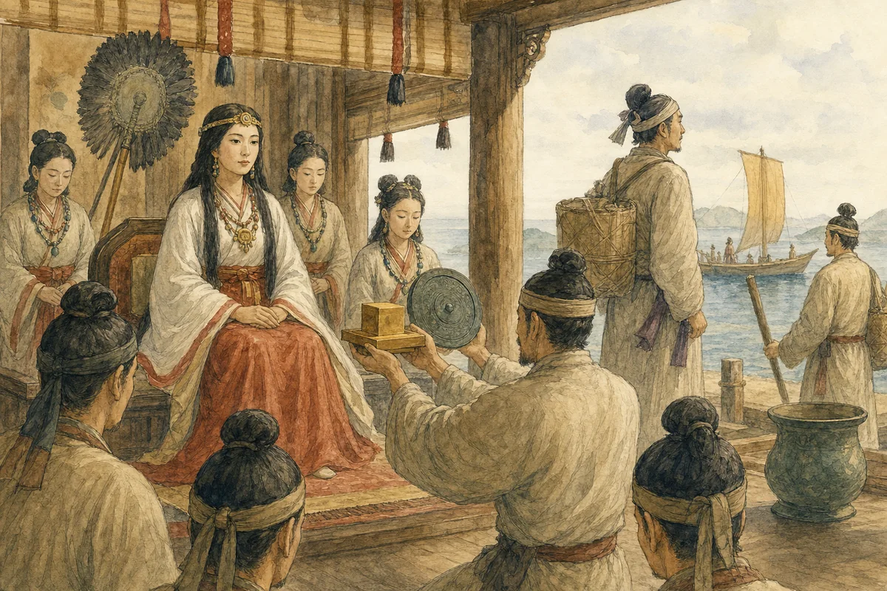
1世紀、奴国の王は後漢の皇帝に使いを送って、「漢委奴国王」と刻まれた金印を授かったんだ。この金印は、江戸時代に福岡県の志賀島で発見されているんだよ。3世紀ごろになると、30あまりの国をまとめた邪馬台国の女王卑弥呼が魏に使いを送って、親魏倭王の称号を授かったんだね。このように貢ぎ物を送って中国の皇帝に王として認めてもらう外交を朝貢と呼ぶんだけど、卑弥呼と邪馬台国のことは中国の歴史書『魏志』倭人伝に記されているんだよ。
古墳時代と大和政権
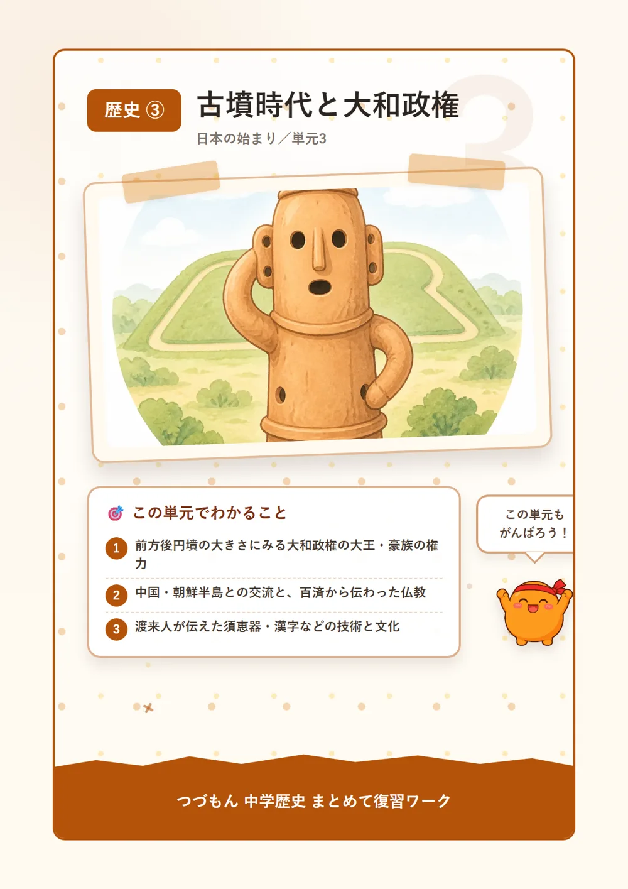
1大和政権と前方後円墳
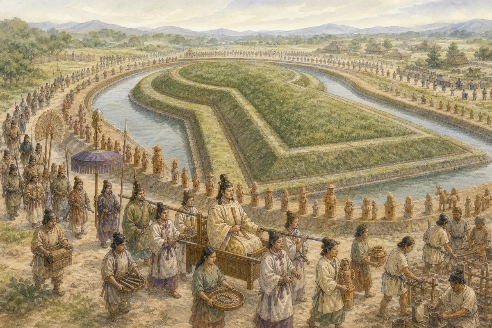
3世紀後半、近畿地方を中心に大和政権が成立して、その頂点に立つ大王のもとに各地の豪族がまとめられたんだ。大王や豪族の力を示す巨大な墓として前方後円墳が各地に造られていて、大阪府堺市の大仙古墳はその代表で全長約486mにもおよぶんだよ。古墳の上や周りには人や動物、家などをかたどった埴輪が並べられていて、死者の魂を守るためだったと考えられているんだ。埼玉県の稲荷山古墳と熊本県の江田船山古墳から出土した鉄剣・鉄刀には、共通してワカタケル大王の名が刻まれていて、大和政権の支配が関東から九州まで広い範囲に及んでいたことがわかるんだよ。
2中国・朝鮮半島との交流
5世紀、倭の五王と呼ばれる大和政権の王たちは中国の南朝に使いを送っていて、その活動は中国の歴史書『宋書』に記録されているんだよ。また、朝鮮半島には北部の高句麗、南西の百済、南東の新羅という国があって、大和政権は鉄の原料を得るために朝鮮半島南部の伽耶地域と交流していたんだ。百済とは友好関係を結んでいて、6世紀半ばには百済から日本へ仏教が伝えられているんだよ。
3渡来人が伝えた技術と文化
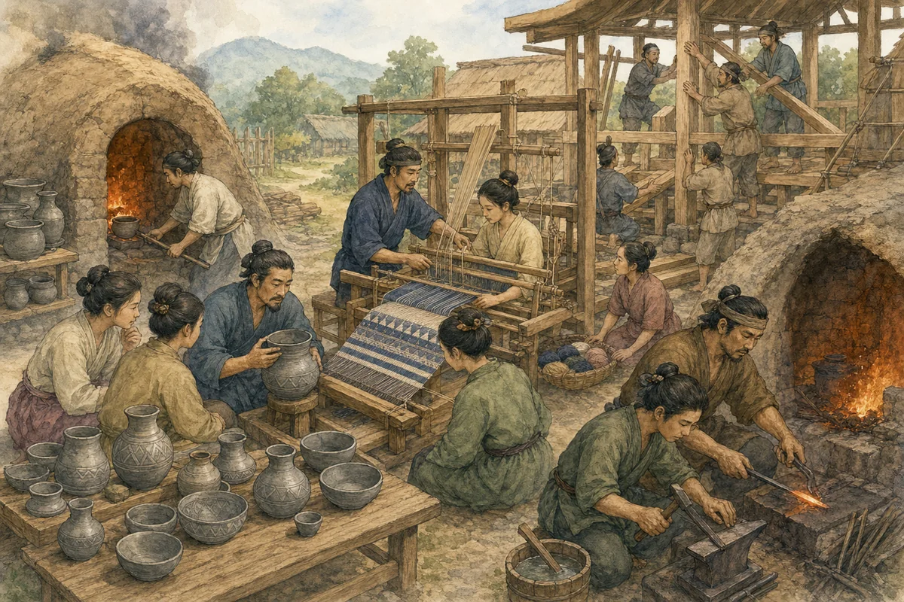
このころ、朝鮮半島や中国大陸から日本へ移り住んだ渡来人が、さまざまな新しい技術や文化を伝えてくれたんだ。高温で焼く硬い灰色の土器である須恵器の製法や、記録や書類作成に使う漢字も、その一つだよ。渡来人が伝えた技術や文化には、それまでの日本になかったものが多くて、その後の国づくりの土台になっていったんだね。